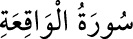

<a name=9145></a><br/>
<b>56- VÂKIA SÛRESİ</b><br/>
<i><b>Mekke’de inmiştir: 96 âyettir. </b></i><br/>
<i><b>Adını ilk âyetinde geçen ve </b></i><br/>
<i><b>kıyâmet olayını ifâde eden </b></i><br/>
<i><b>«vâkıa» kelimesinden almıştır.</b></i><br/>
